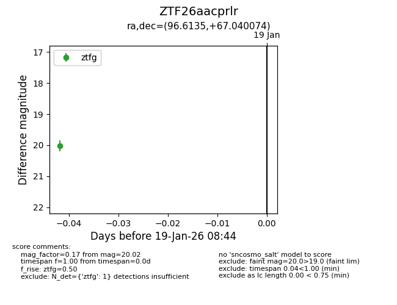
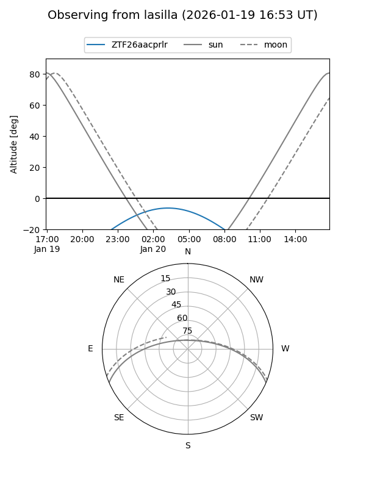
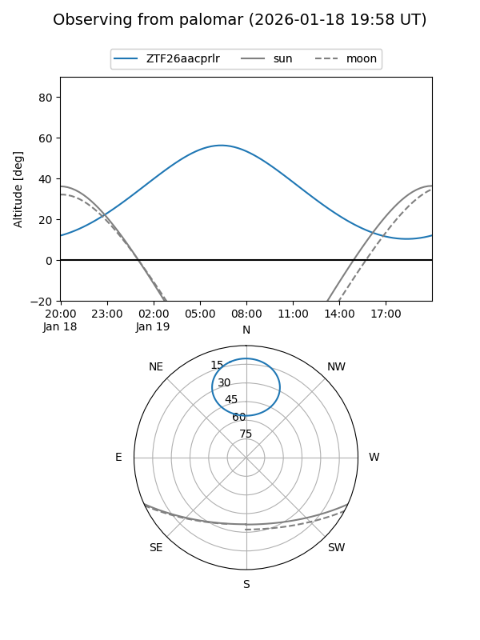

ZTF26aacprlr
Target ZTF26aacprlr at 2026-01-19 08:46
Aliases and brokers:
FINK: link
Lasair: link
ALeRCE: link
alt names
ZTF26aacprlr (ztf,fink_ztf)
Coordinates:
equatorial (ra, dec) = 96.6135,+67.04007
equatorial (HMS+DMS) = 06:26:27.25,+67:02:24.27
galactic (l, b) = (147.7418,+22.46312)
Flags:
Photometry:
last ztfg=20.02
1 ztfg detections
Lightcurve

Visibility


Additional plots